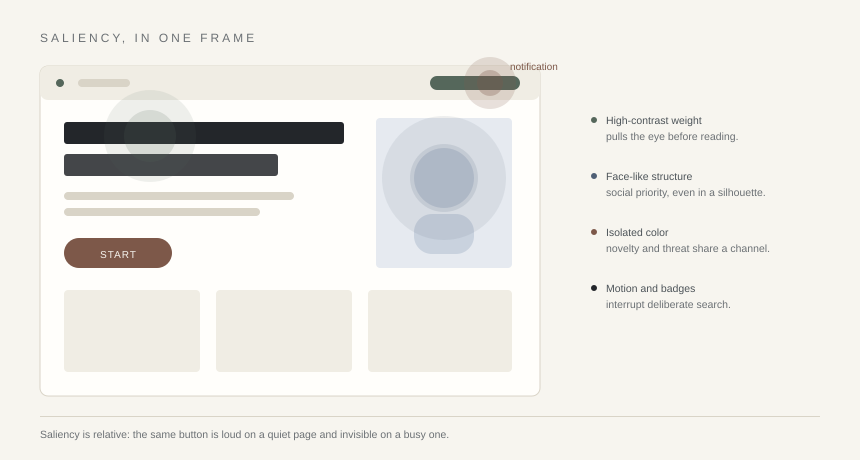
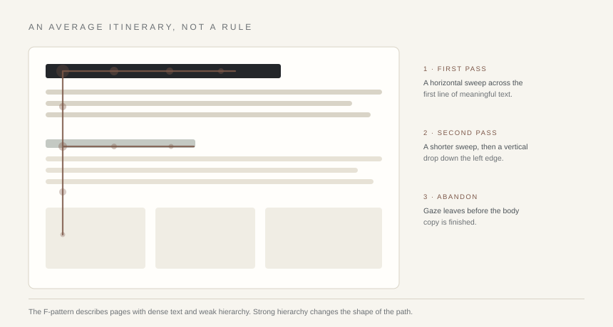

Chapter 02第二章
Attention, Saliency, and the Gaze注意、显著性与凝视
You do not look at everything on a page; you look at what your brain predicts is worth looking at. This chapter separates bottom-up salience from top-down goals, and shows how interfaces exploit both. 你并不会看页面上的每一样东西；你只看大脑预测值得看的地方。本章区分自下而上的显著性与自上而下的目标，并说明界面如何同时利用这两者。
Attention is a filter with two hands: one is pulled by the stimulus, the other is pushed by the task. The eye lands where salience and expectation agree. Most of the page is never seen, and that is not a bug—it is how a limited system survives an unlimited feed. 注意是一只有两只手的过滤器：一只手被刺激拉动，另一只手被任务推动。视线落在显著性与预期达成一致的地方。页面的大部分从未被看见，这不是缺陷，而是一个有限系统在无限信息流中生存的方式。
Two kinds of attention两种注意
Bottom-up attention is stimulus-driven: a flash, a face, a sudden movement, a high-contrast edge. It is fast, largely automatic, and shared with other animals. Top-down attention is goal-driven: you are looking for a price, a name, an unsubscribe link, and your expectation tunes what counts as visible. 自下而上的注意由刺激驱动：一次闪光、一张脸、一个突然的动作、一条高对比的边缘。它快速、基本自动，并且与其他动物共享。自上而下的注意由目标驱动：你在找价格、找名字、找退订链接，而你的预期会调节什么才算“看得见”。
Michael Posner's cueing experiments showed that attention can be shifted covertly, without moving the eyes, and that a valid cue speeds detection. The practical lesson is that attention is not the same as gaze. Users can stare at a banner and still not process it. 迈克尔·波斯纳的线索实验表明，注意可以在不移动眼球的情况下被隐蔽地转移，而有效线索会加快检测。实际启示是：注意并不等于凝视。用户可以盯着一条横幅，却依然没有加工它。
Computational saliency models, such as Itti and Koch's, predict fixations from low-level features: contrast, color, orientation, and motion. They work reasonably well on free viewing, and less well when a person has a specific task. Saliency is not meaning. A red badge is salient; whether it matters is a judgment. 计算显著性模型，例如 Itti 与 Koch 的模型，会根据对比、颜色、朝向和运动等低级特征预测注视点。在自由观看时，它们表现尚可；当人带着具体任务时，表现就差一些。显著不等于有意义。一个红色角标很显著，但它是否重要，是一个判断。

Preattentive features and pop-out前注意特征与弹出
Anne Treisman's feature-integration theory distinguished features that are detected in parallel—color, orientation, size, motion—from conjunctions that require serial search. A single red dot among green dots pops out. A red vertical bar among red horizontal bars and green vertical bars takes work. 安妮·特雷斯曼的特征整合理论区分了两类情况：颜色、朝向、大小、运动等特征可以并行检测；而特征的组合则需要串行搜索。绿点中的一个红点会“弹出”；但在红色横条与绿色竖条之中找一个红色竖条，就需要费力。
The design implication is blunt: if everything is emphasized, nothing is. Emphasis is a ratio, not an absolute. A page with six primary buttons has no primary button. 设计上的含义很直接：如果一切都强调，那就没有强调。强调是一种比例，而不是绝对值。一个页面若有六个主按钮，就等于没有主按钮。
The isolation effect, first described by Hedwig von Restorff in 1933, explains why the one item that differs from its neighbors is remembered better. Novelty buys attention. It also spends it: the same trick repeated becomes wallpaper. 赫德维希·冯·雷斯托夫在 1933 年描述的孤立效应，解释了为什么与邻居不同的那一个项目更容易被记住。新颖性换来注意，也在消耗注意：同一个把戏重复多次，就会变成墙纸。
The eye's itinerary眼睛的行程
The eyes move in saccades—brief jumps—separated by fixations of roughly 200 to 300 milliseconds. During reading, a skilled reader makes three to four saccades per second. Only the fixated region is processed in high detail; the rest is preview and prediction. 眼睛以扫视——短暂的跳跃——移动，中间穿插约 200 至 300 毫秒的注视。阅读时，熟练读者每秒会做三到四次扫视。只有被注视的区域得到高细节加工，其余部分只是预览与预测。
The “F-pattern” popularized by Jakob Nielsen is a description of average scanning on text-heavy pages: a horizontal sweep near the top, a shorter second sweep, then a vertical drop along the left edge. It is not a law of design. It is what happens when hierarchy is weak and paragraphs are long. 雅各布·尼尔森推广的“F 型模式”，是对文本密集页面上平均扫视行为的描述：顶部一次横向扫视，稍短的第二眼，然后沿左边缘向下。它不是设计法则，而是层级薄弱、段落冗长时所发生的事情。
Eye-tracking studies routinely find that users read a minority of the words on a page. The number varies wildly with task, motivation, and layout, so treat any single percentage as a local observation, not a universal constant. The robust finding is the strategy: people scan first and read later, if at all. 眼动研究反复发现，用户只阅读页面上少数文字。具体比例会随任务、动机和版式大幅变化，因此任何单一百分比都应被视为局部观察，而非普遍常数。稳健的发现是策略本身：人们先扫视，之后才阅读——如果还会阅读的话。

What makes us miss things我们为什么会漏看
Change blindness is the failure to notice a change that occurs during a disruption—a blink, a cut, a scroll. In Rensink, O'Regan, and Clark's experiments, large changes to a scene went undetected when a brief blank intervened. The visual system does not store a complete snapshot; it stores what it needs for the current task. 变化盲视，是指未能注意到在中断期间发生的变化——一次眨眼、一次剪辑、一次滚动。在 Rensink、O'Regan 与 Clark 的实验中，当中间插入短暂空白时，场景中的巨大变化也未被察觉。视觉系统并不储存完整快照，它只储存当前任务所需的东西。
Inattentional blindness is the cousin of change blindness: when attention is engaged elsewhere, an unexpected object can pass through the field of view unnoticed. The gorilla experiment is the famous demonstration. The lesson is not that people are careless. It is that attention is a bottleneck with a narrow gate. 非注意盲视是变化盲视的近亲：当注意被别处占用时，一个意料之外的物体可以穿过视野而不被注意。大猩猩实验是最著名的演示。它想说明的不是人粗心，而是注意是一个闸门很窄的瓶颈。
On the web, the same machinery produces banner blindness and ad avoidance. Users learn the visual grammar of promotion—bright rectangles, badges, motion in the periphery—and skip it, sometimes skipping the useful thing that wears the same costume. 在网页上，同样的机制制造了横幅盲视与广告回避。用户学会了促销的视觉语法——明亮的矩形、角标、 periphery 中的运动——然后跳过它，有时也跳过了穿着同样戏服的有用内容。
Demo · Find the change演示 · 找出变化
A brief blank hides the switch.一次短暂空白掩盖了切换。Designing with attention, not against it顺应注意，而不是对抗注意
A page that respects attention does three things. It establishes one dominant message, so the first fixation has somewhere useful to land. It uses whitespace to group and pace, rather than to decorate. And it sequences disclosure: the detail is available, but not all at once. 一个尊重注意的页面会做三件事。它建立一个主导信息，让第一次注视有值得落脚的地方。它用留白来分组和调节节奏，而不是装饰。它还安排披露的顺序：细节可以获得，但不必一次全部涌来。
The ethical line is between guiding and hijacking. Guiding says: here is the next step toward your goal. Hijacking says: here is a shortcut that serves our goal, disguised as yours. Notifications, autoplay, infinite scroll, and fake urgency all sit on that line, and most of them cross it. 伦理的界线在“引导”与“劫持”之间。引导说的是：这是通往你目标的下一步。劫持说的是：这里有一条服务于我们目标的捷径，但伪装成你的目标。通知、自动播放、无限滚动和虚假紧迫感都站在这条线上，而其中大多数越过了线。
Banner blindness was documented by Benway and Lane (1998): participants looking for specific information on a page often failed to find it when it was placed inside a banner-shaped region. The effect is learned, not innate, and it scales with how ad-like the region looks. Eye-tracking adds a second caution: where the eye goes is not the same as where the mind goes. A fixation can be empty. 横幅盲视由 Benway 与 Lane（1998）记录：参与者在页面上寻找特定信息时，如果该信息被放在横幅形状的区域内，往往找不到。这种效应是习得的，而非天生的，并且会随该区域“像广告的程度”而增强。眼动追踪还带来第二个警告：眼睛落在哪里，不等于心智在哪里。一次注视可以是空的。
Before scrolling a familiar page, predict your first three fixations. Then look. Ask three other people to do the same. The gap between predictions and gaze is a map of the hierarchy you actually built, as opposed to the one you intended. 在滚动一个熟悉的页面之前，先预测你的前三个注视点，然后再看。请另外三个人做同样的事。预测与真实凝视之间的差距，就是“你实际建立的层级”与“你打算建立的层级”之间的地图。
- Attention is both pulled by salience and pushed by goals.注意既被显著性拉动，也被目标推动。
- Emphasis is relative; six priorities equal none.强调是相对的；六个优先级等于没有优先级。
- Scanning is the norm; reading is the exception that must be earned.扫视是常态；阅读是例外，而且必须被争取。
- Change blindness and banner blindness are filters working as designed.变化盲视与横幅盲视，都是过滤器在按设计工作。
- Treisman, A., & Gelade, G. (1980). A feature-integration theory of attention. Cognitive Psychology, 12(1), 97–136.
- Itti, L., Koch, C., & Niebur, E. (1998). A model of saliency-based visual attention for rapid scene analysis. IEEE Transactions on Pattern Analysis and Machine Intelligence, 20(11), 1254–1259.
- Posner, M. I. (1980). Orienting of attention. Quarterly Journal of Experimental Psychology, 32(1), 3–25.
- Rensink, R. A., O'Regan, J. K., & Clark, J. J. (1997). To see or not to see: The need for attention to perceive changes in scenes. Psychological Science, 8(5), 368–373.
- Nielsen, J. (2006). F-shaped pattern for reading web content. Nielsen Norman Group.
- Benway, J. P., & Lane, D. M. (1998). Banner blindness: Web searchers often miss “obvious” links. Internetworking.